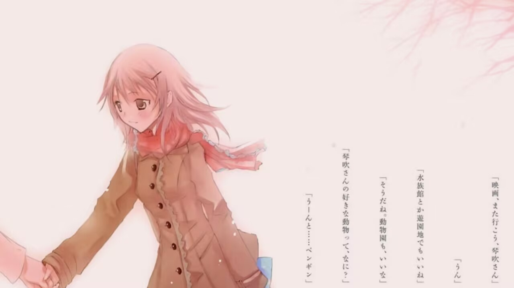
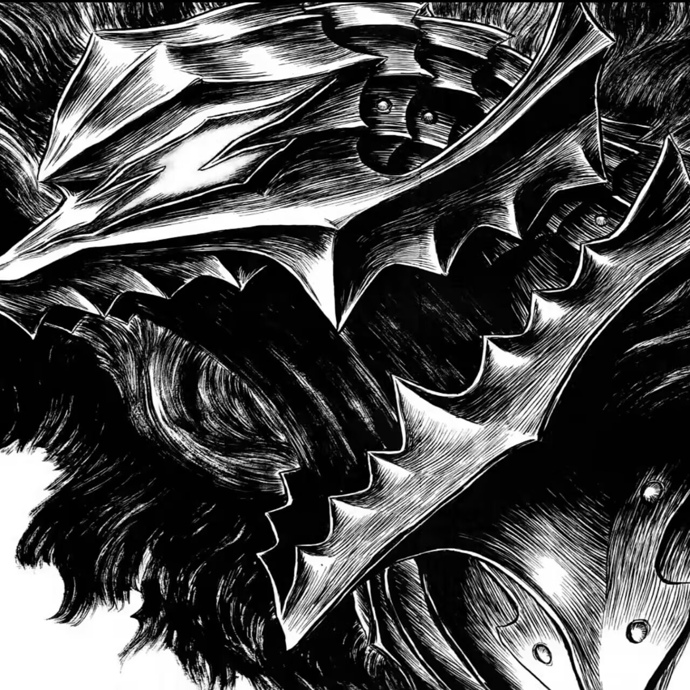

Hello everyone, you can call me Tabibito. This is my ideal: to become a digital nomad and travel around the world.
Even though the entire website is written in English, I actually took Japanese for the Gaokao (China's college entrance exam) and my English isn't good. I just used an English font—that's the only reason!
I am a huichen on a qiao.My life only about qiao,Cars that over the qiao and peoples made of my life.I want to see out the qiao,but the wind that bring me out is nothing.Long time over,I wait'nt my wind.I think is can't.So I ji jin the carlun de feng xi,I out the qiao,and i see the world.
In 1937, Camus first encountered the concept of "the absurd" in his debut work, L'Envers et l'Endroit (Betwixt and Between). In his twenties, his thinking already reached the boundaries of existential inquiry. The following year, he incorporated physical sensations into his writing, turning his focus to the sunlight, rocks, wind, and salt along the Algerian Mediterranean coast, and immersing himself in the perceptions of the land and the human body. This gave birth to Noces (Weddings), which became

For Gabriel García Márquez, what shines is not just his stories, but his life itself. The Gabriel García Márquez: Four Masterpieces Collection brings together four "classics among classics" that top the list of his must-read works: his novels One Hundred Years of Solitude and Love in the Time of Cholera, his novella No One Writes to the Colonel, and his only autobiography Living to Te

"I’m Tono Azusa—your typical 'literary girl,' as you can see." It’s been two years since I met this mysterious girl who refers to herself that way. Guided by this "literary girl"—someone who loves the world’s stories so much she wishes she could devour them—Kokoro has navigated and overcome all kinds of hardships. Yet, the day of Azusa’s graduation is finally drawing near. And then… This "literary girl" suddenly utters words of betrayal. Stunned by this, Kokoro is further manipulated by Ruto.
This set of textbooks is written by frontline teachers with rich teaching experience from the School of Mathematics, Shandong University. The first edition was a national planned textbook for the "Tenth Five-Year Plan" period in general higher education, including Calculus I, Calculus II, Linear Algebra (Original Edition), Probability Theory and Mathematical Statistics, and Complex Functions and Integral Transforms (five volumes). After years of teaching practice, the School of Mathematics of Shandong University has achieved remarkable results in mathematics curriculum construction and mathematics teaching reform. Integral and Differential Practice, Linear Algebra, Complex Functions and Integral Transforms were rated as national excellent courses in 2007

I Am a Cat is a full-length novel by Natsume Soseki and also his representative work. Written between 1904 and September 1906, the work began serialization in the magazine Hototogisu in January 1905, and was later published in three volumes: Volume 1, Volume 2, and Volume 3. The era in which Natsume Soseki lived was a period when Japan was transitioning from a feudal society to a capitalist society and embarking on a path of "civilization and enlightenment." After the Meiji Restoration, while the economy developed, social

Shanghai is a global metropolis with growing economic and cultural influence, as well as one brimming with opportunities. When China and the world converge and integrate in Shanghai, there is also a need for a literary work that embodies and symbolizes Shanghai’s diversity and internationalization—serving to better introduce this inclusive city to the world. Compiled by David Gosset, a French expert in global affairs and international relations, this book invites over 30 renowned figures from home and abroad to each contribute a short essay. These contributors come from fields including politics, business,
Antoine de Saint-Exupéry was a renowned modern French writer, and his fairy tale novel The Little Prince stands as a masterpiece of modern fairy tales. This edition of The Little Prince (Author’s Hand-Drawn Illustrations Commemorative Version), translated by Fan Dongxing, includes both the novel The Little Prince and the essay Letter to a Hostage. It also features hand-drawn illustrations exclusively authorized by the original author. Written in the form of an essay, Letter to a Hostage embodies the author’s profound insights into friendship, his motherland, and the inheritance of civilization, as well as his reflections on humanity and the earth. In contrast, The Little Prince is prese

Alice's Adventures in Wonderland is a literary work published in 1865 by British author Charles Lutwidge Dodgson (1832–1898) under the pen name Lewis Carroll. It tells the story of Alice, a fantasy-loving young girl, who chases a talking rabbit holding a pocket watch in her dream—only to fall down a rabbit hole. This marks the start of her wonderful and absurd journey. Later, she confronts the foolish and stubborn Red King and Red Queen; it is only after she shouts out loud that she wakes up from the dream.
One day.I gived my classmate a video.Conent is me singed in a room.zhe ju shi zai bu hui xie le.fool normol huisheng can't was made.He ask me how to do. I gived he a key.After a time.He kai school and sushe'door by the key.But can't kai.So he found and asked me this key is where's key.I say to him this is u pan,he fenkai the key in conter and found a jiekou.cha dao in computer and say normal video.Found he was shua with me.
A boy and his grandfather shenghuo in a haibian.His's life is happy for him.Until the fengbao daizou his grandfather.The second day,he faced ocean and cried with nobody.He listened the song in the chaoxi.The song is sad,like known him,and the song is wenrou,cread him.The song for haidi,for shou wang zhe yu ren de ren yu.